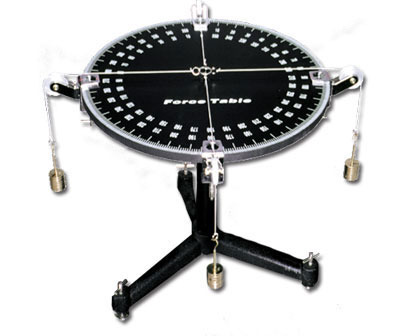

×
Instructions
A "force table" consists of a circular table with four hanging masses. Each mass has a string which hangs over a pulley and connects the mass to a ring in the
center of the table.

When all the forces are in equilibrium, the ring will not move.
In the following example, you are shown the top-down view of a force table with three vectors representing the forces of three masses.
You must calculate the magnitude and direction of the fourth mass such that the ring will remain in the center of the table.